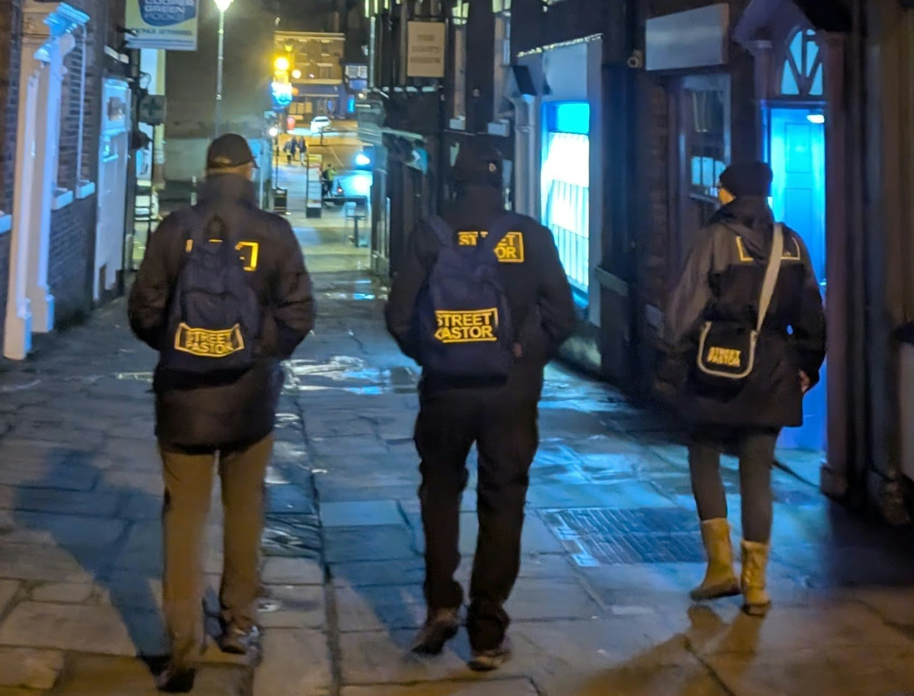

Street Pastoring With IBS

Having IBS can change your life forever and affect how you do everyday things, like working, going out and socialising. For me, it can make going out on a Saturday night quite difficult.
Once a month, I volunteer as a Street Pastor. For those who don't know, we are a group of Christian volunteers who go out on Saturday nights to help make sure people get home safely. I can try to eat things that I know usually won't upset my stomach, but that's the frustrating thing about IBS: you can eat something one day and be completely fine, then eat exactly the same thing another time and suddenly your stomach decides it doesn't agree with you. IBS can really throw you a curveball!
Because of that, I can feel a little apprehensive before the evening starts. Thankfully, we have a patrol base right in the centre of town, so if I need the toilet, it's easy to get to. Lots of the venues we visit are also very good at letting us use their toilets, which is a huge help and takes some of the worry away.
Halfway through the evening, usually around 12:30 a.m., we have a break where we can have a piece of toast and a hot drink. On a cold night, that little break is lovely. There's something very comforting about having something warm to eat and drink when you've been outside for hours.
Unfortunately, I can't eat ordinary bread anymore, so I can't have the toast. It's actually quite sad to miss out on something so simple! I always try to make sure I take something nice and gluten-free with me instead, so I can still have something to eat during the break. One of the guys recently said to me, "Why didn't you bring your own bread? You could toast that." He hadn't thought about the fact that I can't use the same toaster as everyone else.
It's one of those things that people don't necessarily think about unless they've had to deal with it themselves. To someone else, it's just a toaster. To me, it's another little thing I have to think about.
That's what life with IBS and food restrictions can be like. Things that most people don't give a second thought to suddenly require planning, preparation and explanation.
But I'm still going out. I'm still volunteering. I'm still doing something that I really care about. IBS may have changed how I have to do things, but I'm determined not to let it stop me from doing them.